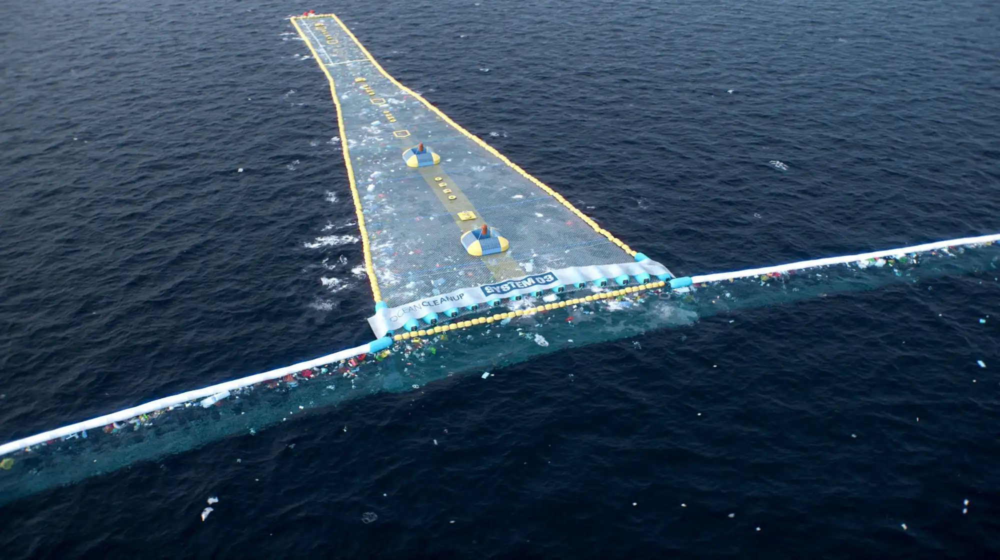

Blue Horizon
Introduction
Where
Our company is able to dispose the service all around the globe in oceans, seas and even navigable rivers. So far our project is active along the coasts of the Adriatic Sea, southern Indian coasts and along the eastern coast of the United States.
When
Project Blue Horizon is a groundbreaking initiative aimed at addressing the escalating issue of marine pollution and the degradation of our oceans. With the ever-increasing threat to marine life and ecosystems due to plastic waste, oil spills, and other pollutants, there is an urgent need for comprehensive solutions. This project strives to not only clean up our seas but also to raise awareness about the importance of preserving marine environments for future generations.
Objectives
Removal of Plastic Waste
The primary focus of project Blue Horizon is the removal of plastic waste from oceans. Large-scale cleanup operations, utilizing advanced technologies and strategically positioned vessels, will target major oceanic plastic accumulation zones.
Education and Awareness
A crucial aspect of Blue Horizon is educating communities, businesses, and governments about the consequences of marine pollution. Educational programs, workshops, and awareness campaigns will be conducted globally to foster a sense of responsibility and promote sustainable practices.
Collaboration with Governments and NGOs
Collaboration is key to the success of Blue Horizon. The initiative will work closely with governments, non-governmental organizations (NGOs), and international bodies to establish and enforce policies that mitigate marine pollution. Joint efforts will be made to create a regulatory framework that supports sustainable practices.
Methods
Innovative Cleanup technologies
The project will invest in the development and deployment of cutting-edge technologies for ocean cleanup. This includes autonomous drones, specialized vessels, and floating barriers designed to trap and collect plastic waste.
A crucial aspect of Project Clean Seas is educating communities, businesses, and governments about the consequences of marine pollution. Educational programs, workshops, and awareness campaigns will be conducted globally to foster a sense of responsibility and promote sustainable practices.
Community Engagement Programs
Local communities will be actively involved in cleanup activities, fostering a sense of ownership and responsibility. Training programs and employment opportunities will be created to empower communities to actively participate in preserving their coastal environments.
Research and Development
Blue Horizon will support ongoing research to explore new methods of waste management and recycling. By fostering innovation, the initiative aims to reduce the generation of marine debris and enhance recycling processes.
The purpose of the project
Blue Horizon is not just a cleanup initiative; it's a global commitment to preserving the health and vitality of our oceans. By combining advanced technologies with community engagement and education, this project aspires to create a sustainable future where the seas are clean, vibrant, and resilient. Through collaboration and concerted efforts, we can ensure that our oceans thrive for generations to come.